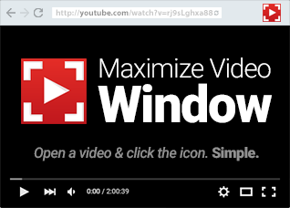

Fullscreen Video to Window (Chrome Extension)
Fullscreen Video to Window Chrome extension
View the Project on GitHub jossef/fullscreen-window
The New Fullscreen Button.
The following icon will appear in the navigation bar. all you have to do is to open a youtube video, and to click the button. the video will be full screened to the browser window.

For the Multitasker!
Best with multiple monitors. open a youtube video, and multitask additional windows.
Works great with
- NVIDIA Surround
- AMD Eyefinity
- Dual / Triple Monitors
- 4K Displays

Authors and Contributors
Arno van den Brink (Bozozo), Jossef Harush
Support or Contact
Having trouble? Check out our issues.